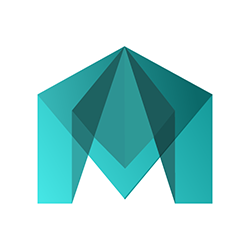
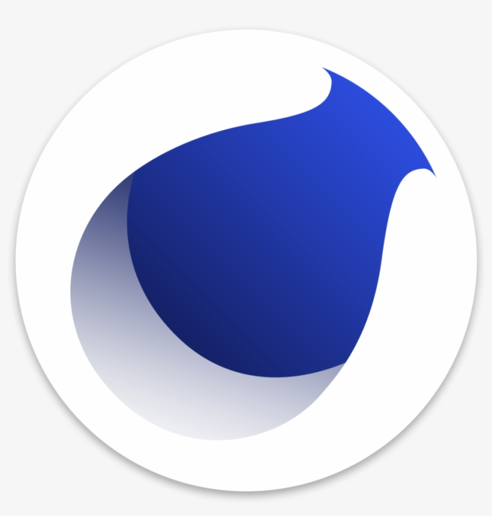
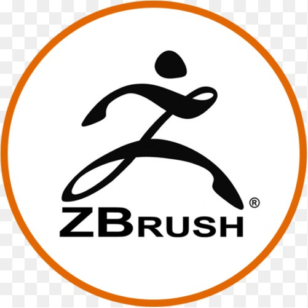

Обзор программ
Здесь ты можешь найти по нужной программе необходимый минимум знаний, что понять философию и устройство той или иной программы, сферу её применения, базовые инструменты, слабые и сильные стороны
 Autodesk 3ds Max - одна из старейших и самых распространенных программ для 3D-моделирования. Для нее выпущено больше всего видеоуроков, курсов и дополнительных расширений. Часто новички выбирают ее именно поэтому. Разработчики программы предоставляют для учащихся бесплатную версию на три года — чтобы ее оформить, достаточно зарегистрироваться в качестве студента.
Autodesk 3ds Max - одна из старейших и самых распространенных программ для 3D-моделирования. Для нее выпущено больше всего видеоуроков, курсов и дополнительных расширений. Часто новички выбирают ее именно поэтому. Разработчики программы предоставляют для учащихся бесплатную версию на три года — чтобы ее оформить, достаточно зарегистрироваться в качестве студента.
 Maya - это профессиональная программа для создания 3D графики. Пользователь может создавать трёхмерные модели и объекты, моделировать фигуры и делать графическую обработку объектов.Эту программу для 3D-моделирования больше всего любят в США и Европе, так что, если вы думаете о работе с зарубежными студиями, стоит начать изучение именно с этого софта. Так же у Maya есть бесплатная версия для студентов.
 Cinema 4D - эту программу отличает приятный и удобный интерфейс, который легче воспринимается новичками. Раньше Cinema 4D использовалась преимущественно для моушн-дизайна, но в последнее время все чаще можно увидеть специалистов из кино и рекламы, работающих в ней. Из минусов можно отметить только стоимость программы и отсутствие студенческой версии. Скачать бесплатную пробную версию можно на официальном сайте.
Houdini - именно в Houdini собираются сцены фильмов или видео, а все потому, что программа обладает мощными возможностями для создания спецэффектов. Более того, эта программа для 3D-моделирования удобна для эффективной работы над сложными и нестандартными задачами. Если вы хотите работать в сфере VFX1 и заниматься разработкой зрелищных эффектов, стоит попробовать изучить этот 3D-пакет. Студенты и новички в компьютерной графике могут установить бесплатную версию программы.
 Blender - за последние пару лет Blender стал одной из самых популярных программ для создания трехмерной графики. Плюсов много: полностью бесплатная, кроссплатформенная и удобная программа с гибким интерфейсом и частыми обновлениями привлекает как новичков, так и профессионалов, ранее работавших в других 3D-пакетах. Еще одно преимущество — очень развитое комьюнити, всегда готовое прийти на помощь начинающим CG2-художникам.
Blender - за последние пару лет Blender стал одной из самых популярных программ для создания трехмерной графики. Плюсов много: полностью бесплатная, кроссплатформенная и удобная программа с гибким интерфейсом и частыми обновлениями привлекает как новичков, так и профессионалов, ранее работавших в других 3D-пакетах. Еще одно преимущество — очень развитое комьюнити, всегда готовое прийти на помощь начинающим CG2-художникам.
 ZBrush - эта программа для 3D-«лепки», которую часто изучают в дополнение к уже пройденным, — она позволяет полностью раскрыть творческий потенциал. В ZBrush чувствуешь себя настоящим скульптором, ведь приходится работать с «цифровой глиной», с помощью различных инструментов создавая из нее разнообразные объекты. Программа идеальна для работы с людьми, животными и различными материалами — она не имеет аналогов и отлично подойдет тем, кто уже знаком с 3D-моделированием и хочет усовершенствовать свои навыки.